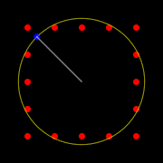
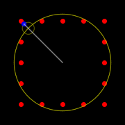
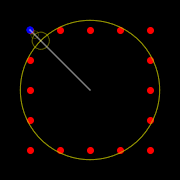
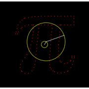
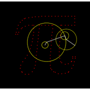
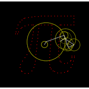
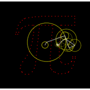

Circles and Lines NFT Collection
Here is a description of how the gifs in the Circles and Lines collectoins are made, by demonstrating with simple images
The gifs in the Circles and Lines collection are built based on math! They consist of a large chain of circles, you can think of these as clocks that circle around each other. The beginning of the chain is the first clock in the center of the image. The tip of the hand of this clock is the center of the next clock, etc. Each drawing consists of a chain of 100+ clocks and the colored line traces the tip of the hand of the last clock in the chain! The starting position, size, and speed of each clock are determined by a custom-built app using "Fourier series" which end up resulting in these mesmerizing patterns!
Example with square
Lets start with a super simple example: Here our "image" is a square pattern with 16 dots. The best a single circle can do, is obviously a cirle, which somewhat resembles the general size of the shape. You'll see that wiht a second circle added, the shape already becomes more square-like, and when we add a 3rd cicle it's already pretty good at tracing the original pattern.
  
Example with Pi
Now let's look at a slightly more complicated, but still simple figure. Here I'm showing gifs with 2, 4, 8, 16, 32, and 64 circles. You'd have a hard time guessing what shape we're trying to make from the first few images, but you can see that even with 16 circles it already starts to look like a "pi". Going from 32 to 64 still gives some nice improvement on how good the lines and corners are, but the general shape is there with as few as 32 circles!





If can we make a pi with "only" 64 circles, imagine what we can do with two of four times that! In theory, you could make ANY shape as long as you have infinite number of cirles. The only restriction is that it needs to be a single line that loops, so where beginning and end meet in the same point. Most of the gifs in the Circles and Lines collection are made with 300-500 circles.